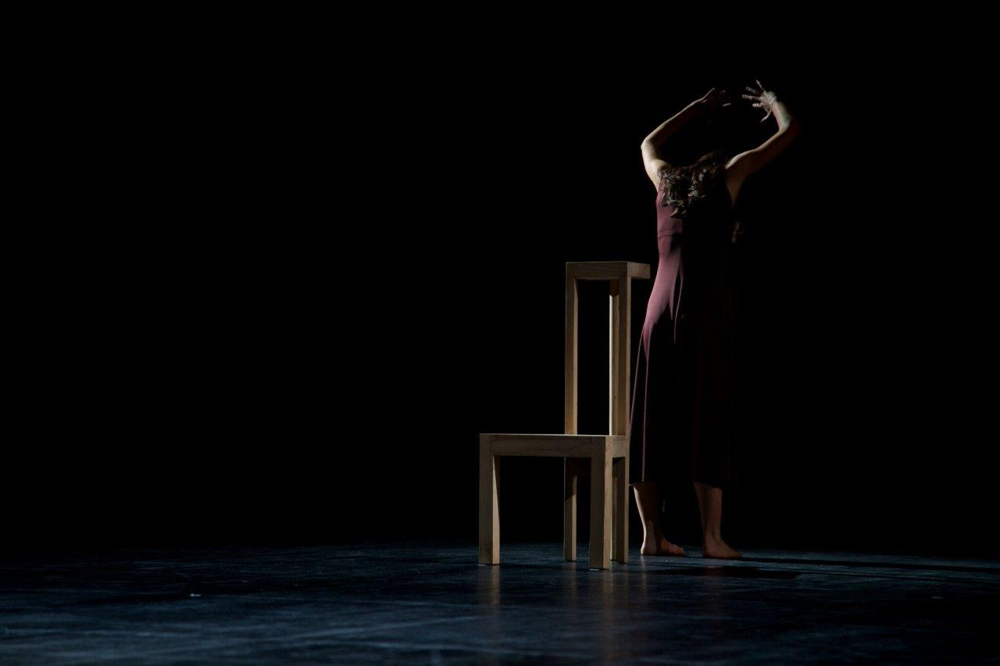
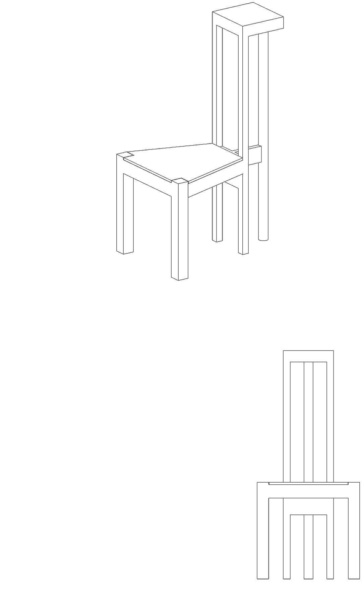
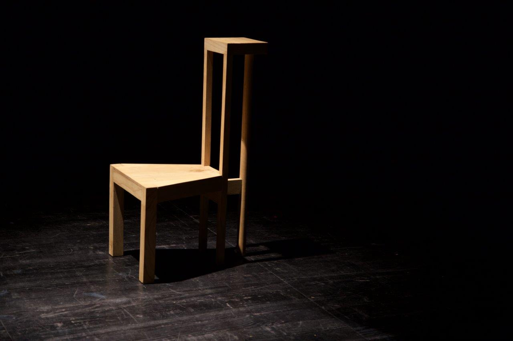
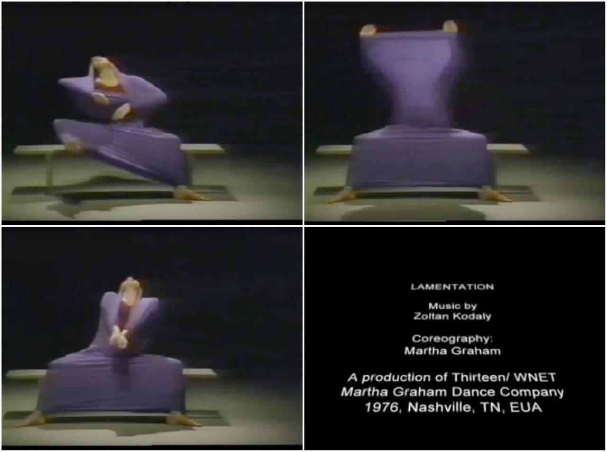
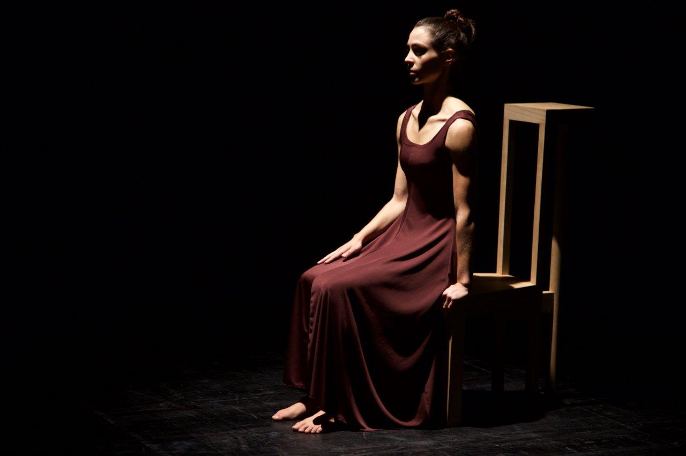

Cenografia para “Martha”
estreado no Teatro Constantino Nery em Matosinhos

(equipa: Hugo Barros e Pedro Oliveira)
A partir de uma peça de Martha Graham, - “Lamentation”, à qual prestam de alguma forma tributo, Pedro Carvalho e Sara Garcia compõem um solo de dança, cujo único personagem se move invariavelmente em torno de uma cadeira (na peça de Graham era um banco).
O pedido inicial era claro, mas ia sendo ajustado nos ensaios, ainda realizados com uma qualquer cadeira que serviu como espécie de detector das incompatibilidades do seu desenho com o movimento que se pretendia desenrolar sobre ela. Uma cadeira que tivesse dois assentos e uma costa, dois sentares distintos, um com reclinação e apoio , à cota baixa, outro mais efémero e pontual, à cota alta . Esta demanda exigia um reforço da estrutura da cadeira, sem o qual o assento à cota alta, instalado sobre a costa do primeiro assento, poderia tornar-se demasiado instável, por se tratar de uma outra cadeira suspensa na mesma cadeira mas só ligada à primeira pela estrutura das costas. Essa dificuldade estrutural, juntamente com a observação do movimento dançado e o figurino dos clips de “Lamentation”, deram o mote para o desenho da cadeira e a sua disposição no espaço do palco.




O movimento era, em grande parte, lido pela (de)formação do figurino usado, uma espécie de túnica lilás elástica, dentro da qual a bailarina parece querer desconfinar-se, quebrando os limites espaciais aparentemente impostos pela roupagem, em vez de o serem pela flexibilidade muscular. Neste constante exercício plástico, lêem-se as linhas definidoras dos membros superiores e inferiores, apenas de um dos lados: o lado terminal para onde o tecido está a ser esticado. Ao contrário do habitual, vemos uma bailarina só com a definição do contorno exterior dos seus membros, tendo um aspecto quase líquido, invertebrado e animalesco, qual medusa, castrador da leitura estrutural do corpo, que é obtida só em momentos específicos da performance. Seria também uma túnica, neste caso carmim, que seria usada na peça a estrear. Dada a necessidade de reforço estrutural, propõe-se que a cadeira pudesse contrastar com a personagem e atribuir-lhe o protagonismo de grande mancha, ao ser dotada apenas com estrutura, de secção quadrangular e, suplementarmente a eixo, uma coluna vertebral de secção circular que suporta o segundo assento pedido. A cadeira, só vertebrada mas imóvel, pronta a receber o corpo movediço, líquido e instável, aumenta o seu sentido de profundidade e tridimensionalidade em palco, com a sua forma trapezóidal e as secções que diminuem da sua frente para o seu tardoz.
Cenografia para “Discursos”, estreado no Teatro Municipal do Porto.
PREVIOUS
|
NEXT
↑